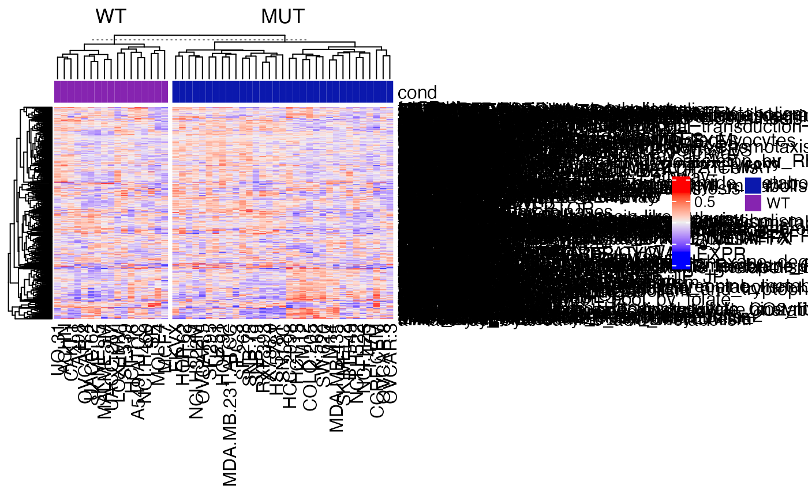
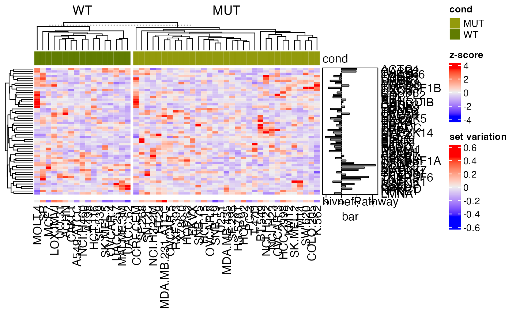

Topic 4-02: GSVA
Zuguang Gu z.gu@dkfz.de
2024-01-21
Source:vignettes/topic4_02_GSVA.Rmd
topic4_02_GSVA.RmdGSVA
We need an expression matrix as well as a collection of gene sets.
lt = readRDS(system.file("extdata", "p53_expr.rds", package = "GSEAtraining"))
expr = lt$expr
condition = lt$condition
ln = strsplit(readLines(system.file("extdata", "c2.symbols.gmt", package = "GSEAtraining")), "\t")
gs = lapply(ln, function(x) x[-(1:2)])
names(gs) = sapply(ln, function(x) x[1])Running GSVA analysis is simple. Just note the gene IDs in expr should match the gene IDs in gs.
The returned value gs_mat is a set-sample matrix that contains “single sample-based gene set variation scores”.
## [1] 522 50gs_mat can be used for downstream analysis. E.g. make heatmaps:
library(ComplexHeatmap)
Heatmap(gs_mat, top_annotation = HeatmapAnnotation(cond = condition),
column_split = condition)
Apply t-test on each row of gs_mat to test whether the gene set-level profile has difference between the two conditions.
library(genefilter)
tdf = rowttests(gs_mat, factor(condition))
tdf$fdr = p.adjust(tdf$p.value, "BH")How many gene sets are significant?
tdf[tdf$fdr < 0.05, ]## statistic dm p.value fdr
## ngfPathway 4.793368 0.2555689 1.623384e-05 0.008474063
## rasPathway 4.178302 0.2625379 1.234110e-04 0.032210282Compare to normal GSEA
As a comparison, we also perform a normal GSEA analysis. We use the t-value as the gene-level score:
Here we also test to the c2 gene set collection, so we need to convert gs to the format clusterProfiler accepts:
map = data.frame(
gene_set = rep(names(gs), times = sapply(gs, length)),
gene = unlist(gs)
)
library(clusterProfiler)
tb = GSEA(geneList = sort(s, decreasing = TRUE), TERM2GENE = map, pvalueCutoff = 1)
head(tb)## ID
## P53_UP P53_UP
## hsp27Pathway hsp27Pathway
## HTERT_UP HTERT_UP
## p53Pathway p53Pathway
## p53hypoxiaPathway p53hypoxiaPathway
## GPCRs_Class_A_Rhodopsin-like GPCRs_Class_A_Rhodopsin-like
## Description setSize
## P53_UP P53_UP 40
## hsp27Pathway hsp27Pathway 15
## HTERT_UP HTERT_UP 109
## p53Pathway p53Pathway 16
## p53hypoxiaPathway p53hypoxiaPathway 20
## GPCRs_Class_A_Rhodopsin-like GPCRs_Class_A_Rhodopsin-like 111
## enrichmentScore NES pvalue
## P53_UP -0.6132568 -2.104150 1.749934e-06
## hsp27Pathway -0.7841899 -2.155634 4.936099e-06
## HTERT_UP 0.3612304 1.931569 1.122005e-05
## p53Pathway -0.7524677 -2.117979 2.127312e-05
## p53hypoxiaPathway -0.6940780 -2.067152 2.933105e-05
## GPCRs_Class_A_Rhodopsin-like -0.4503613 -1.836960 4.218361e-05
## p.adjust qvalue rank
## P53_UP 0.0006912237 0.0006207659 464
## hsp27Pathway 0.0009748795 0.0008755081 882
## HTERT_UP 0.0014773060 0.0013267212 1523
## p53Pathway 0.0021007205 0.0018865898 252
## p53hypoxiaPathway 0.0023171528 0.0020809607 741
## GPCRs_Class_A_Rhodopsin-like 0.0027770879 0.0024940136 2120
## leading_edge
## P53_UP tags=22%, list=5%, signal=22%
## hsp27Pathway tags=53%, list=9%, signal=49%
## HTERT_UP tags=33%, list=15%, signal=28%
## p53Pathway tags=31%, list=2%, signal=31%
## p53hypoxiaPathway tags=30%, list=7%, signal=28%
## GPCRs_Class_A_Rhodopsin-like tags=35%, list=21%, signal=28%
## core_enrichment
## P53_UP NINJ1/PLK3/BBC3/TNFRSF6/BTG2/DDB2/MDM2/BAX/CDKN1A
## hsp27Pathway HSPB1/ACTA1/MAPKAPK2/TNF/IL1A/BCL2/FAS/TNFRSF6
## HTERT_UP DR1/MRPL49/DAP/AHR/EPHA2/LMO4/CDKN2A/KLF5/KIAA0063/WASF1/TSG101/ELF4/CCNH/KIAA0092/HYOU1/CDC6/DYRK1A/SFRS11/ADAM8/LHFPL2/ZNF165/RAE1/SH3BGR/TCTEL1/DDX10/HSF2/MAPK9/SLC1A5/EGFR/MCFD2/CBX5/RDBP/CDKN3/SNRPA1/CTH/GFPT1
## p53Pathway CDK2/BCL2/MDM2/BAX/CDKN1A
## p53hypoxiaPathway CSNK1D/HIC1/CPB2/MDM2/BAX/CDKN1A
## GPCRs_Class_A_Rhodopsin-like ADRA2C/CNR2/FPRL1/EDNRB/FPRL2/RGR/GALR3/OPRL1/NMBR/ADRB1/BDKRB1/RRH/PPYR1/CXCR3/HTR2B/CMKOR1/HTR7/OPRD1/GPR23/AGTR2/EDNRA/ADORA1/ADRA1D/DRD3/CCKBR/GPR44/DRD1/MC1R/HTR2C/CCR2/CCR8/HTR4/HTR1B/MTNR1B/CCBP2/F2RL2/GPR50/ADRA2A/NTSR2Let’s check the expression of genes in the p53Pathway:
g = intersect(gs[["p53Pathway"]], rownames(expr))
mm = expr[g, ]
mm = t(scale(t(mm))) # z-score transformation
Heatmap(mm, name = "z-score", top_annotation = HeatmapAnnotation(cond = condition),
column_title = "p53Pathway",
right_annotation = rowAnnotation(bar = anno_barplot(s[g], axis_param = list(direction = "reverse"), width = unit(2, "cm"))),
column_split = condition) %v%
Heatmap(gs_mat["hivnefPathway", , drop = FALSE], name = "set variation")
Next we make pairwise scatterplot of p-values and statistics for both analysis.
cn = intersect(rownames(tdf), tb$ID)
par(mfrow = c(1, 2))
plot(tdf[cn, "p.value"], tb[cn, "pvalue"],
xlab = "GSVA", ylab = "normal GSEA", main = "p-values")
plot(tdf[cn, "statistic"], tb[cn, "NES"],
xlab = "GSVA / t-values", ylab = "normal GSEA / NES")
abline(h = 0, lty = 2, col = "grey")
abline(v = 0, lty = 2, col = "grey")This makes a problem here that one method generates a significant gene set which can be completely insignificant under another method (left plot). The direction of the general differentiation of a gene set can be reversed in different methods.
g = intersect(gs[["hivnefPathway"]], rownames(expr))
mm = expr[g, ]
mm = t(scale(t(mm))) # z-score transformation
Heatmap(mm, name = "z-score", top_annotation = HeatmapAnnotation(cond = condition),
right_annotation = rowAnnotation(bar = anno_barplot(s[g], axis_param = list(direction = "reverse"), width = unit(2, "cm"))),
column_split = condition) %v%
Heatmap(gs_mat["hivnefPathway", , drop = FALSE], name = "set variation")
Conclusion: It does not seem ssGSEA is better than GSEA. Use with caution.